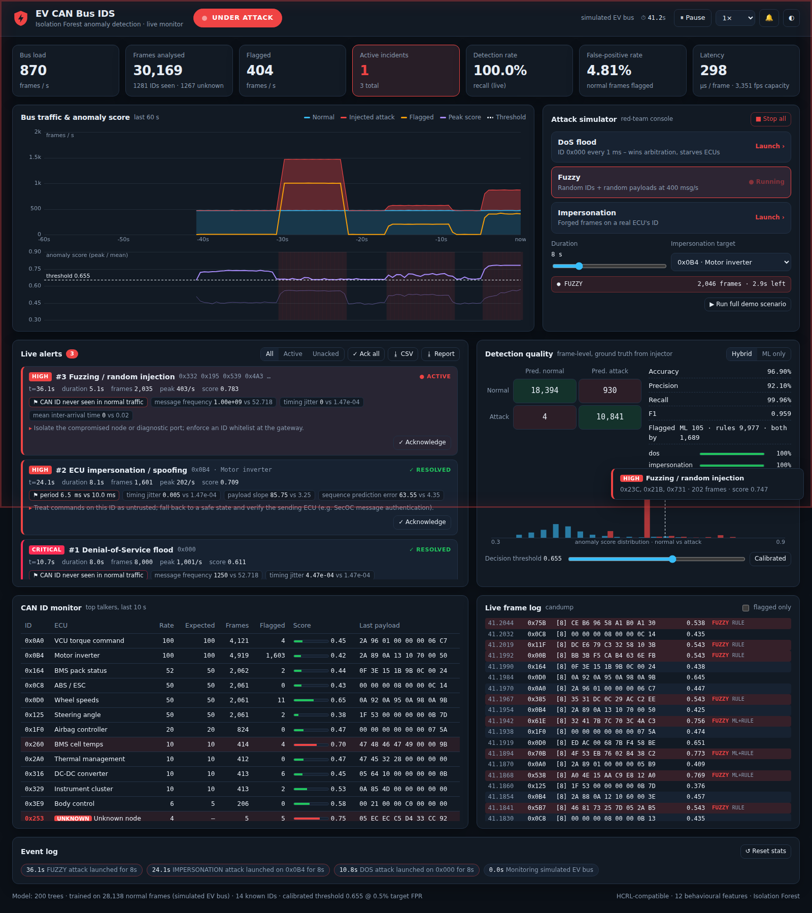
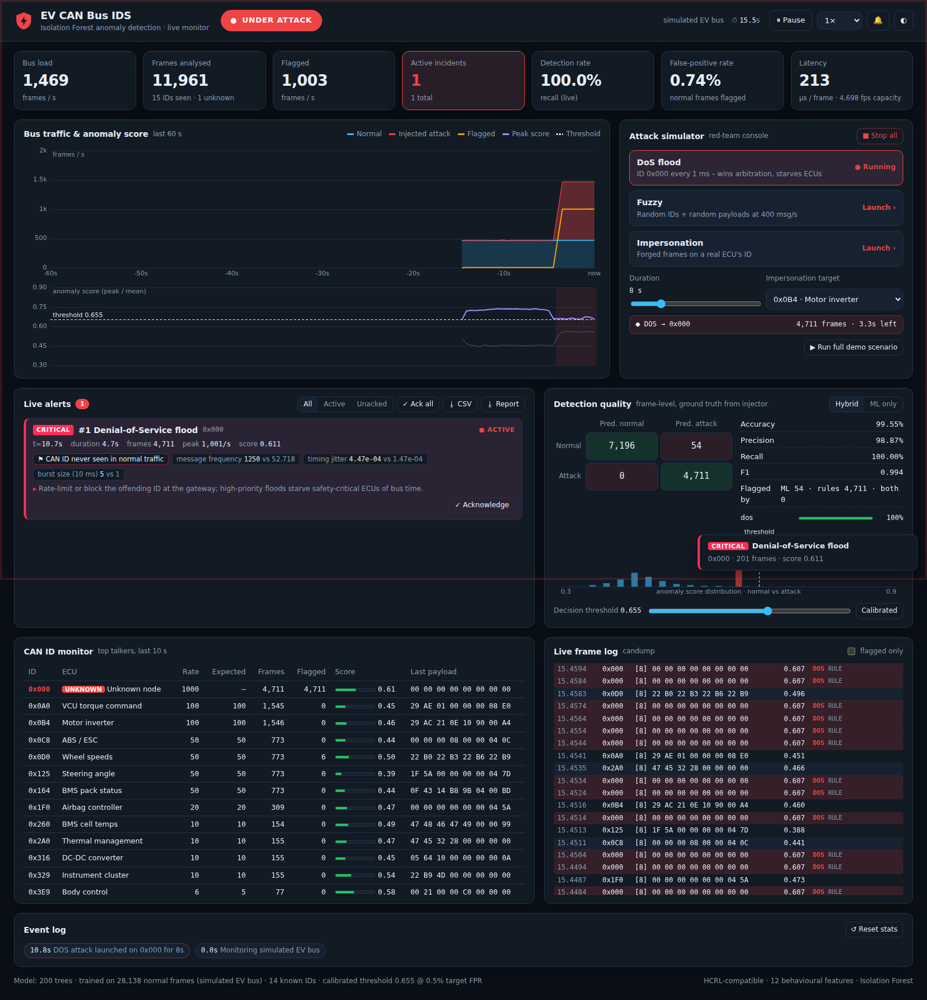

A real-time intrusion detection system for electric-vehicle CAN networks. It learns what normal traffic looks like, flags DoS, fuzzing and impersonation attacks within milliseconds, and explains every alert in plain language.
An electric vehicle's battery management system, motor inverter, brakes and steering all talk over a CAN bus. CAN was designed in the 1980s for reliability, not security. Every message is broadcast, and any node can send any identifier.
An attacker who reaches the bus through the OBD-II port, a telematics unit or a compromised ECU can flood it, fuzz it, or impersonate a safety-critical unit. Standards such as UN R155 and ISO/SAE 21434 now require manufacturers to monitor for exactly this.
From a live bus, the built-in EV simulator (14 ECUs), or a replay of the HCRL dataset (4.7M messages).
Computed per CAN ID as each frame arrives.
An Isolation Forest trained on normal traffic only, plus per-ID rules learned from the same data: known IDs, expected period, payload bounds.
Thousands of flagged frames are grouped into one incident, typed as DoS, fuzzing or impersonation, with the reason attached.
A live dashboard with an audible alarm, a JSON log for a SIEM, and Slack or Teams webhooks.
Moving the research notebook onto a live stream exposed two structural blind spots of the Isolation Forest:
The fix stays unsupervised. The rules are learned from the same normal-only data, so no attack examples are ever needed.
| Metric · 39,672 frames | Isolation Forest | Hybrid |
|---|---|---|
| Accuracy | 73.18% | 97.48% |
| Recall | 15.62% | 99.98% |
| Precision | 78.58% | 92.34% |
| False-positive rate (incl. frames of the attacked ECU) | 1.85% | 3.60% |
| False-positive rate on clean traffic | ~0.5% | ~0.5% |


Each incident shows its evidence ("period 5.0 ms vs 10.0 ms expected") and a recommended response.
Launch DoS, fuzzing or impersonation against any ECU and watch detection happen live.
A confusion matrix, per-attack recall and a threshold slider show the precision/recall trade-off as you move it.
Incident lifecycle (open, escalate, resolve, acknowledge), CSV and JSON export, a JSONL log and webhooks.
The notebook's batch pandas features rewritten as an online extractor with constant state per CAN ID. Feature parity with the notebook is checked by tests.
20 pytest tests covering the parser, features, detection per attack type, the alert lifecycle and the API. GitHub Actions CI and a Dockerfile.
Python · scikit-learn · NumPy · Flask + SSE · vanilla JS canvas charts · Playwright · ffmpeg
pip install -r requirements.txt
python -m can_ids dashboard --open
I built a real-time intrusion detection system for electric-vehicle CAN networks. It learns normal behaviour from 12 timing and payload features and flags DoS, fuzzing and impersonation attacks in about a quarter of a millisecond per frame. When I moved it from a research notebook to a live stream, I found the Isolation Forest missed every DoS frame. So I added rules learned from the same normal-only data, which took recall from 16% to 99.98% and F1 from 26% to 96%. It ships with a live alert dashboard, an attack simulator, 20 automated tests and CI.
• Built a real-time ML intrusion detection system for EV CAN bus networks (Python, scikit-learn), detecting DoS, fuzzing and impersonation attacks at ~250 µs per frame. • Identified structural blind spots of Isolation Forest on streaming CAN data and designed a hybrid detector with learned per-ID rules, raising attack recall from 15.6% to 99.98% and F1 from 26% to 96% at ~0.5% false alarms on clean traffic. • Delivered a live SOC dashboard (Flask, Server-Sent Events) with explainable incidents, severity escalation, webhook alerting and a red-team attack simulator; covered by 20 tests and CI.
Your car's brakes, battery and motor trust every message on their network. Anyone who can reach it can pretend to be any of them. That network is the CAN bus, and for my project I built an intrusion detection system that watches it in real time. What it does: → Learns normal EV traffic from 12 timing and payload features → Detects DoS, fuzzing and ECU impersonation in ~250 µs per frame → Turns thousands of malicious frames into one explained alert ("motor inverter sending every 5 ms instead of 10") What I learned: the Isolation Forest from my research notebook caught only 16% of attack frames on a live stream, and missed every DoS frame. Rules learned from the same normal-only data fixed that: recall 99.98%, F1 up from 26% to 96%. Code, 3-minute demo video and dashboard: github.com/SuhailKider/EV-CAN-IDS #AutomotiveCybersecurity #MachineLearning #ElectricVehicles #CANbus #ISO21434
Version 1 watches how frames arrive. Version 2 checks whether what they say is physically possible. That catches a stealthy attacker who silences an ECU and sends perfectly timed, plausible-looking lies, and the same engine catches failing sensors.
Signals. DBC decoding and signal-level simulator; an F1 session loader with cached telemetry.
Physics models. Residual models for each signal pair; baseline vs v1 on masquerade attacks.
Faults vs attacks. Inject sensor faults and forged values; classify and explain them.
Ship. Dashboard v2 with a race-engineer view, ONNX export with an embedded latency benchmark, and a write-up mapped to ISO/SAE 21434.